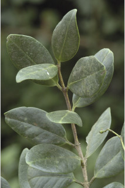
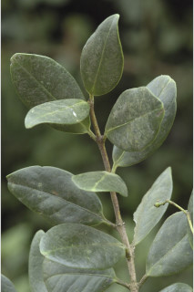
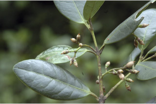
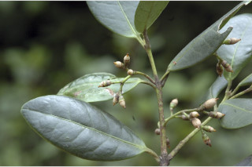

Small trees, up to 8 m tall.
8 ಮೀ ಎತ್ತರಕ್ಕೆ ಬೆಳೆಯುವ ಸಣ್ಣ ಮರಗಳು.
8 മീറ്റര് വരെ ഉയരത്തില് വളരുന്ന; ചെറുമരങ്ങള്.
சிறிய மரம் 8 மீ. வரை வளரக்கூடியது
Branchlets terete, glabrous.
ಕಿರುಕೊಂಬೆಗಳು ದುಂಡಾಗಿದ್ದು ರೋಮರಹಿತವಾಗಿರುತ್ತವೆ.
ഉരുതും, അരോമിലവുമായ ഉപശാഖകള്.
சிறிய நுனிக்கிளைகள் குறுக்குவெட்டுத் தோற்றத்தில் வளையமானது, உரோமங்களற்றது.
Leaves simple, opposite, decussate; petiole ca. 0.7 cm long; lamina 3-9.3 x 1.6-4.7 cm, elliptic to ovate, apex obtuse, base rounded to cuneate, coriaceous, pale beneath, olive-grey when dry; secondary_nerves 6-8 pairs, slender; tertiary_nerves admedially_ramified.
ಎಲೆಗಳು ಸರಳವಾಗಿದ್ದು ಕತ್ತರಿಯಾಕಾರದ ಅಭಿಮುಖ ಮಾದರಿಯಲ್ಲಿ ಜೋಡಿತವಾಗಿದ್ದು ಅಂದಾಜು 0.7 ಸೆಂ.ಮೀ ಉದ್ದದ ತೊಟ್ಟು ಹೊಂದಿರುತ್ತವೆ;ಎಲೆಪತ್ರಗಳು 3 –9.3 X 1.6 - 4.7 ಸೆಂ.ಮೀ ಗಾತ್ರವಿದ್ದು ,ಅಂಡವೃತ್ತದಿಂದ ಅಂಡಾಕಾರದವರೆಗಿನ ಆಕಾರ, ಚೂಪಲ್ಲದ ಮಾದರಿಯ ತುದಿ, ದುಂಡಾಗಿರುವುದರಿಂದ ಬೆಣೆಯಾಕಾರದವರೆಗಿನ ಮಾದರಿಯ ಬುಡ, ತೊಗಲವನ್ನೋಲುವ ಮೇಲ್ಮೈ ಹೊಂದಿರುತ್ತವೆ ಎಲೆಗಳ ತಳಬಾಗ, ಮಸುಕಾಗಿದ್ದು ಒಣಗಿದಾಗ ಆಲಿವ್ ಬೂದು ಬಣ್ಣ ಹೊಂದಿರುತ್ತವೆ;ಎರಡನೇ ದರ್ಜೆಯ ನಾಳಗಳು ತೆಳುವಾಗಿದ್ದು 6 ರಿಂದ 8 ಜೋಡಿಗಳಿರುತ್ತವೆ ;ಮೂರನೇ ದರ್ಜೆಯ ನಾಳಗಳು ಎಲೆಯ ಅಕ್ಷದ ದಿಕ್ಕಿಗಿರುತ್ತವೆ
ഇലകള് ലഘുവും, സമ്മുഖ, ഡെക്കുസേറ്റ് ക്രമത്തിലുള്ളതുമാണ്; ഇലഞെട്ടിന് ഉദ്ദേശം 0.7 സെ.മി നീളം; പത്രഫലകത്തിന് 3 സെ.മി മുതല് 9.3 സെ.മി വെരെ നീളവും 1.6സെ.മി മുതല് 4.7 സെ.മി വരെ വീതിയും, ആകൃതി ദീര്ഘവൃത്തീയം മുതല് അണ്ഡാകാരം വരെ, ഉപകോണാകാരത്തിലുള്ള പത്രാഗ്രം, പത്രാധാരം വൃത്താകാരം മുതല് ആപ്പാകാരം വരെ, ചര്മ്മില പ്രകൃതം, വിളറിയ കീഴ്ഭാഗം, ഉണങ്ങുമ്പോള് ഒലിവ്-ചാരനിറത്തില്; 6 മുതല് 8 വരെ ജോഡി, നേര്ത്ത, ദ്വിതീയ ഞരമ്പുകള്; ത്രിതീയ ഞരമ്പുകള് അഡ്മീഡിയലി റാമിഫൈഡ് രീതിയിലാണ്.
இலைகள் தனித்தவை, எதிரடுக்கமானவை, குறுக்குமறுக்கமானவை; இலைக்காம்பு தோராயமாக 0.7 செ.மீ. நீளமானது; இலை அலகு 3-9.3 X 1.6-4.7 செ.மீ., நீள்வட்டம் முதல் முட்டை வடிவம், அலகின் நுனி மழுங்கியது, அலகின் தளம் வட்டமானது முதல் ஆப்பு வடிவம் கொண்டது, கோரியேசியஸ், கீழ்பரப்பு வெளிறியது, காய்ந்த இலைகள் பச்சை-சாம்பல் நிறமுடையது; இரண்டாம் நிலை நரம்புகள் 6-8 ஜோடிகள், மெலிதானது; மூன்றாம் நிலை நரம்புகள் அட்மீடியல்லி ராமிபைடு.
Inflorescence cymes, 4-8 cm long.
ಪುಷ್ಪಮಂಜರಿಗಳು 4 ರಿಂದ 8 ಸೆಂ.ಮೀ ಉದ್ದವಿರುವ ಮಧ್ಯಾರಂಭಿ ಮಾದರಿಯವು. ಅಕ್ಷಾಕಂಕುಳಿನಲ್ಲಿದ್ದು ತೊಟ್ಟುರಹಿತ ಗುಚ್ಛಗಳಲ್ಲಿರುತ್ತವೆ.
പൂങ്കുലകള് 4 സെ.മി മുതല് 8 സെ.മി വരെ നീളമുള്ള സൈമുകളാണ്.
சைம் மஞ்சரி, 4-8 செ.மீ. நீளமுடையது.
Capsule, brown, apiculate, sepals persistent in fruit; 1-seeded, arillate.
ಸಂಪುಟ ಫಲಗಳು ಕಂದು ಬಣ್ಣ ಹೊಂದಿದ್ದು ಅಗ್ರದಲ್ಲಿ ಸೂಕ್ಮವಾದ ಮುಳ್ಳು ಸಮೇತವಿರುತ್ತವೆ;ಪುಷ್ಪ ಪಾತ್ರೆಯ ಪತ್ರಕಗಳು ಕಾಯಿಗಳಲ್ಲಿ ಶಾಶ್ವತವಾಗಿರುತ್ತವೆ;ಬೀಜ 1, ಪತ್ರ ಸಮೇತ.
കായ, ഉറച്ചുനില്ക്കുന്ന വിദളങ്ങളോടുകൂടിയ, തവിട്ടുനിറത്തിലുള്ളതും, മുനപ്പോടു കൂടിയതുമായ കാപ്സ്യൂള് ആണ്; അരിലോടുകൂടിയ ഒറ്റ വിത്തുമാത്രം.
கேப்சூல், ப்ரவுன் நிறம், எபிகுலேட், புல்லி இதழ்கள் கனியுடன் உதிராமல் காணப்படும், ஒரு விதையுடையது, பத்திரி (ஏரில்லேட்) உடையது.
 



 
